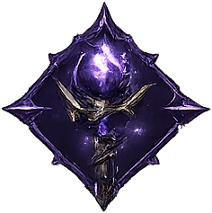
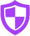

Bienvenido a la Wiki de Obsidian RO
Aquí encontrarás información relevante acerca de nuestro servidor y de Ragnarok Online en general.
No dudes en contribuir sugiriendo nuevos artículos o ampliando los existentes.
- Proyecto desarrollado con una experiencia clásica y personalizada.
- Pre-Renewal - Episodio 13.3 El Dicastes.
- ¡Únete y prueba un sin fin de posibilidades!

Combate Elemental
Solución de ProblemasObsidian-RO
Empezando ~ Guía Básica Main Office ~ Comandos ~ Misiones de Leveo 120-200 ~ Misiones Diarias ~ Daily Reward ~ Guild Pack ~ Reconocimientos
Equipo Custom
Combos Elementales Quest ~ Headgears ~ Armas ~ Escudos ~ Armaduras ~ Garments ~ Shoes ~ Accesorios ~ Municiones Elementales ~ Super Novice Gear
Player vs Player
Ranking & Rewards ~ War of Emperium ~ War of Emperium 2.0 ~ Battlegrounds ~ King of Emperium ~ PvP
Random Options / Encantamientos
Mecánicas
Guías
Spirits ~ Builds ~ Notas de Colores ~ Esencias ~ Piedras Quest ~ Piedras Quest Tipo Vip ~ Cartas ~ Channels ~ MVP'S Respawn ~ Otras